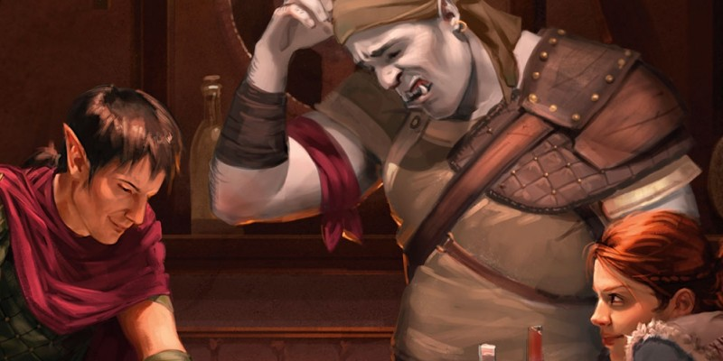

Personnages pré-tirés
Petite collection de personnages pré-tirés. Pour chacun vous avez accès au bloc de stat D&D 5 complet, ainsi qu'à un fichier à télécharger pour le Character Builder.
- Clerc (savoir) elfe niv 3 (Illydia Maethellyn)
- Guerrier (maître de guerre) halfelin niv 3 (Robec Dentdragon)
- Guerrier (champion) naine niv 3 (Jarhild Stoneforge)
- Magicien (enchantement) elfe niv 3 (Gilthas Galadonif)
- Magicien (nécromancie) humain niv 3 (Hommet Shaw)
- Paladin (serment de Dévotion) humain niv 3 (Javen Tarmikos)
- Rôdeur (chasseur) halfeline niv 3 (Bryn Lightfingers)
- Roublard (voleur) nain niv 3 (Larethar Gulgrin)
- Barde (savoir) demi-elfe niv 1 (Ilona la Borgne)
- Clerc (savoir) demi-orc niv 1 (Armine)
- Guerrier (chevalier occulte) naine niv 1 (Urmora)
- Moine (voie de la main ouverte) humain niv 1 (Karad Malar)
- Occultiste (archifée) elfe niv 1 (Peren Holimion)
- Roublard (assassin) humain niv 1 (Aloïs Makarian)
